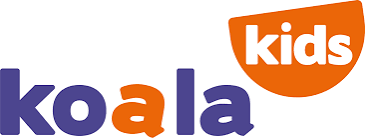

Dernière mise à jour : 12 novembre 2026
Cette politique explique quelles informations personnelles Koala Kids recueille dans son application et sur ses pages en ligne (préinscription, espace famille, lien de signature, dépôt de documents, lien de candidature), pourquoi, combien de temps, et comment exercer vos droits. Elle s'adresse aux familles, au personnel, aux candidats à un emploi, aux stagiaires et aux intervenants extérieurs.
Le responsable du traitement est l'organisation qui gère la crèche où votre enfant est accueilli, où vous travaillez ou où vous effectuez votre stage : Koala Kids [raison sociale, forme juridique, adresse du siège, SIRET à compléter].
Contact pour toute question ou demande : [adresse e-mail dédiée aux données personnelles à confirmer, par exemple a.janin@koalakids.fr]
Délégué à la protection des données (DPO) : [nom et coordonnées, ou « non désigné » à compléter]
L'application est conçue et maintenue par David Bucari, qui agit comme sous-traitant de l'organisation et ne l'utilise pas pour son propre compte.
| Pour quoi faire | Données | Fondement légal |
|---|---|---|
| Traiter une demande de préinscription et vous envoyer une estimation de tarif | Identité et coordonnées des parents, profession, revenus du foyer, date de naissance ou terme de l'enfant, souhaits d'accueil | Mesures précontractuelles ; votre case de consentement à l'envoi |
| Établir le devis et le contrat d'accueil, le faire signer en ligne | Identité, coordonnées, horaires, tarifs, signature, preuves de signature (adresse IP, appareil, date) | Exécution du contrat |
| Accueillir l'enfant au quotidien : dossier, présences, pointage, repas, facturation | Identité, naissance, adresse, parents et personnes autorisées, régime alimentaire, allergies, pièces administratives, heures d'arrivée et de départ, factures | Exécution du contrat ; obligations légales (réglementation de l'accueil du jeune enfant, comptabilité) |
| Santé de l'enfant : projet d'accueil individualisé (PAI), médicaments sur ordonnance, soins, vaccinations | Pathologies, allergies, ordonnances, vaccins, incidents, pièces jointes | Obligations légales et sauvegarde des intérêts vitaux de l'enfant ; données de santé traitées avec les précautions de l'article 9 du RGPD |
| Suivi du développement de l'enfant et partage avec vous | Observations, jalons, synthèses | Mission d'accueil (intérêt légitime) |
| Espace famille : informations, documents, code de pointage en images, notifications | Code d'accès, adresse e-mail, messages lus, documents déposés, abonnement aux notifications | Exécution du contrat ; notifications : votre consentement |
| Photos des enfants et remise aux parents au départ | Photos, classées par enfant | Droit à l'image signé à l'entrée |
| Classement des photos par reconnaissance du visage (option, désactivée par défaut) | Empreinte numérique du visage (128 nombres) de l'enfant, uniquement pour ceux dont les parents ont donné un accord distinct | Votre consentement explicite, retirable à tout moment (voir §4) |
| Pour quoi faire | Données | Fondement légal |
|---|---|---|
| Gérer le dossier du personnel | Identité, coordonnées, diplômes, expérience, contrat, pièces justificatives, heures, frais, formations | Exécution du contrat de travail ; obligations légales |
| Planning et pointage | Horaires, pauses, pointages | Exécution du contrat de travail |
| Visites médicales (médecine du travail) | Dates de visite et avis d'aptitude ; aucune donnée médicale détaillée n'est saisie | Obligation légale |
| Signature électronique du contrat de travail | Signature, adresse IP, appareil, empreinte du document | Exécution du contrat ; preuve |
| Accueil des stagiaires | Identité, coordonnées, établissement, convention, pièces, évaluation | Exécution de la convention de stage |
| Recrutement (candidature à un remplacement) | Identité, coordonnées, poste visé, CV et lettre de motivation, réponses au questionnaire sur le projet pédagogique, date d'ouverture des documents transmis, date et heure d'entretien | Mesures précontractuelles prises à votre demande ; intérêt légitime |
| Messagerie interne, notifications, assistance | Contenu des messages, abonnement aux notifications, page et appareil joints à une demande d'assistance | Intérêt légitime ; notifications : consentement |
| Pour quoi faire | Données | Fondement légal |
|---|---|---|
| Sécuriser les comptes | Identifiant, journal des connexions et appareils, double authentification, ouverture des documents sensibles, présence en ligne (pour le personnel de direction et les référent·e·s) | Intérêt légitime et obligation de sécurité |
| Hygiène et sécurité (relevés de température, nettoyages, registre de sécurité, passage d'un intervenant extérieur) | Relevés, nom et signature de l'intervenant, prénom et initiale du nom de l'enfant pour un panier repas PAI | Obligation légale |
Nous n'utilisons aucune donnée à des fins publicitaires ou commerciales et ne revendons aucune donnée.
Les informations de santé des enfants ne sont lisibles que par le personnel habilité de la crèche concernée et par la direction ; les référent·e·s d'une autre crèche n'y ont pas accès. Les e-mails d'alerte ne contiennent jamais de donnée de santé ni de nom d'enfant : ils signalent seulement qu'un événement est consigné et renvoient vers l'application protégée. Chaque ouverture d'un document sensible est inscrite dans un journal que seule la direction peut consulter.
Les photos servent à constituer un album pour chaque enfant, remis aux parents au départ. Au départ définitif, l'album est remis aux parents (dossier compressé) puis supprimé : aucune archive n'est conservée. Les photos de groupe restent seulement chez les autres enfants concernés.
Le classement par reconnaissance du visage est une option réservée aux crèches qui l'activent, jamais appliquée sans votre accord :
Nous faisons appel à des prestataires techniques, liés par un contrat ou des garanties de protection des données :
| Prestataire | Rôle | Données concernées |
|---|---|---|
| Supabase | Base de données, comptes, stockage des fichiers | Toutes les données de l'application [région d'hébergement à confirmer] |
| GitHub | Hébergement des pages publiques du site | Aucune donnée personnelle enregistrée |
| Google (Gmail) | Envoi des e-mails (contrat, codes d'accès, alertes) | Adresse et contenu des e-mails |
| Anthropic | Transcription de photos de notes de réunion et proposition de planning | Photos de notes (non conservées) ; prénoms et horaires du planning |
| Services de notifications des navigateurs et d'Apple | Acheminer les notifications | Identifiant technique de l'appareil, sans donnée de santé |
| jsDelivr, cdnjs (et Google Fonts sur quelques pages internes) | Bibliothèques et polices des pages | Adresse IP du visiteur |
Certains de ces prestataires sont établis aux États-Unis : les transferts reposent sur les clauses contractuelles types de la Commission européenne ou sur le cadre de protection des données UE–États-Unis. Une sauvegarde hebdomadaire de la base est envoyée par e-mail à l'organisation, qui en est seule destinataire.
| Données | Durée |
|---|---|
| Demande de préinscription restée sans suite | 1 an |
| Dossier de l'enfant (présences, santé, suivi) | 5 ans après la sortie, puis suppression ou anonymisation |
| Contrat d'accueil et preuves de signature | Durée du contrat + 5 ans |
| Factures et pièces comptables | 10 ans |
| Registre de remise en température et de sécurité alimentaire | 3 ans minimum |
| Dossier du personnel | 5 ans après la fin du contrat |
| Dossier de stage | 5 ans après la fin du stage |
| Candidature à un emploi non retenue | 2 ans au plus après le dernier contact, puis suppression |
| Photos de l'enfant | Jusqu'au départ, puis suppression après remise aux parents |
| Accès à l'espace famille | Tant que l'enfant est accueilli ; accès révoqué ensuite |
| Journaux de connexion et d'ouverture de documents | 1 an |
| Messages internes | 2 ans |
Une fois ces délais écoulés, les dossiers sont supprimés ou rendus anonymes ; chaque purge de dossier est consignée dans un journal.
En cas de violation de données susceptible de vous exposer à un risque, nous en informons la CNIL dans les 72 heures et, si nécessaire, les personnes concernées.
Vous pouvez à tout moment demander :
Pour les enfants, les droits s'exercent par les titulaires de l'autorité parentale. Écrivez au contact indiqué au §1 : nous répondons sous un mois. Une pièce d'identité peut être demandée en cas de doute. Si vous estimez que vos droits ne sont pas respectés, vous pouvez saisir la CNIL (www.cnil.fr, 3 place de Fontenoy, 75007 Paris).
L'application n'utilise aucun traceur publicitaire ni outil de mesure d'audience. Elle enregistre seulement sur votre appareil ce qui est nécessaire à son fonctionnement :
Vous pouvez effacer ces données depuis les réglages de votre navigateur ; vous devrez alors saisir de nouveau votre code ou cliquer sur le lien reçu.
Nous la mettons à jour quand l'application ou la réglementation évolue. La date de dernière mise à jour figure en haut de la page ; en cas de changement important, les familles en sont informées dans l'espace famille.